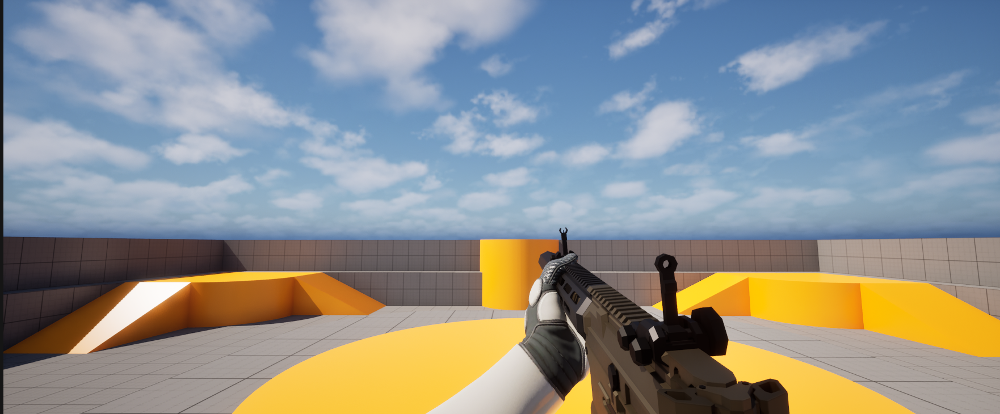

AYS
关于AYShooter
AYShooter是一款使用UE5.7开发的多人在线FPS游戏。
参考游戏：APEX、TTF2、PUBG、CS2、三角洲等。

玩法简介
3C
- 角色采用FPP、TPP双重视角，FPP视角只在客户端渲染，TPP视角在除了自己以外的其他玩家身上渲染。
- FPP采用传统状态机模型，TPP采用MotionMatch，考虑使用Lyra的动画作为Database。
- 扩展CMC，实现冲刺、滑铲、走墙等动作，实现运动状态网络同步以及客户端预测。
- 使用GAS建模核心玩法操作，例如
GA_Fire，GA_Reload等。 - 实现基本的场景交互，例如攀爬、翻越。可以参考GASP的实现。
武器系统
- GAS实现武器射击、换弹等功能。
- 目前先实现一把步枪，后续可以扩展更多武器。
AI
可以考虑使用比较新的StateTree和SmartObject系统。Demo阶段不用考虑。
UI
- 考虑采用MVC架构，具体用委托实现。这方面无需考虑网络同步。
All articles on this blog are licensed under CC BY-NC-SA 4.0 unless otherwise stated.